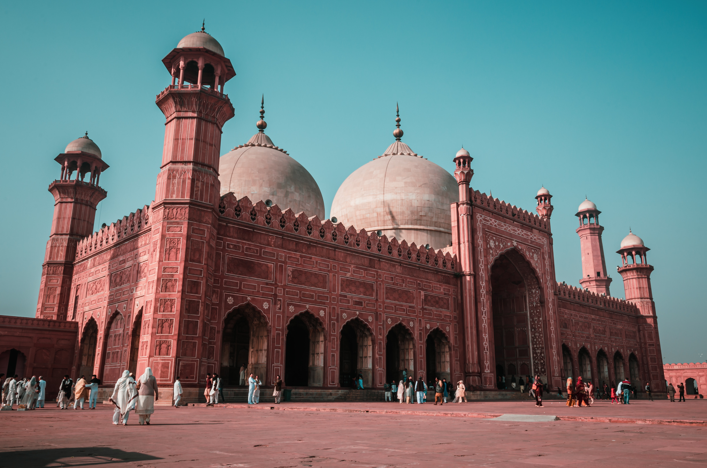

Lahore is the second largest city in Pakistan after Karachi and 26th largest in the world, with a population of over 13 million. It is situated in the north-east of the country with River Ravi flowing north-west of the city. It is the capital of the province of Punjab,where it is the largest city. Lahore is one of Pakistan's major industrial and economic hubs. It has been the historic capital and cultural centre of the wider Punjab region, and is one of Pakistan's most socially liberal, progressive, and cosmopolitan cities.
Famous Places in lahore
|  | |